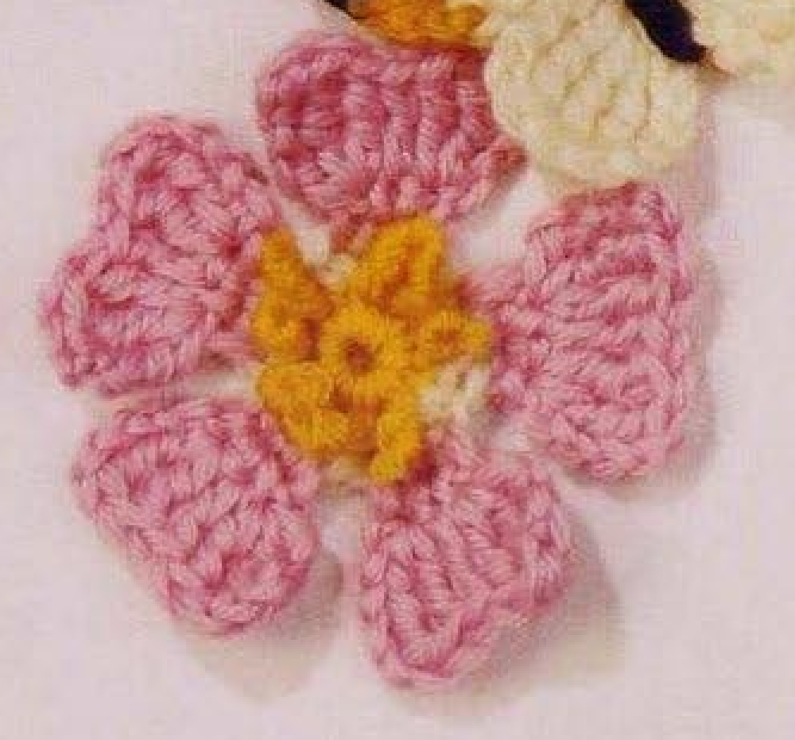
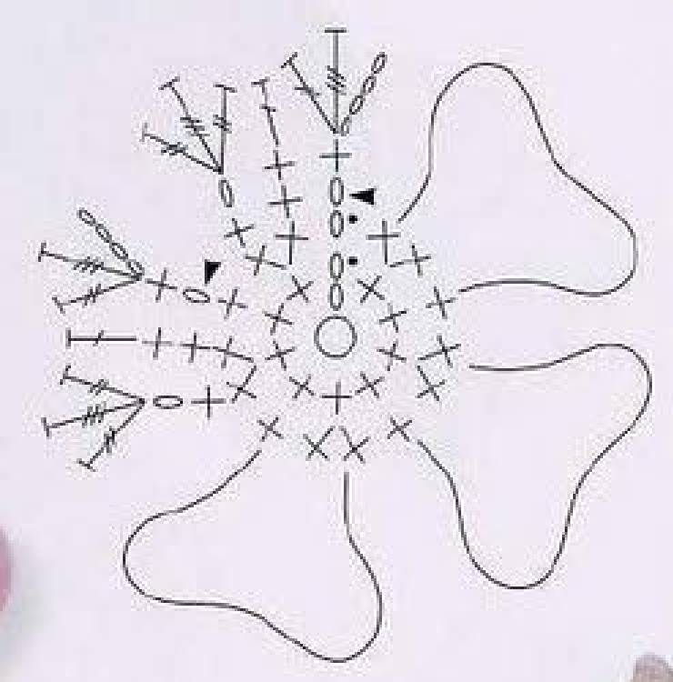
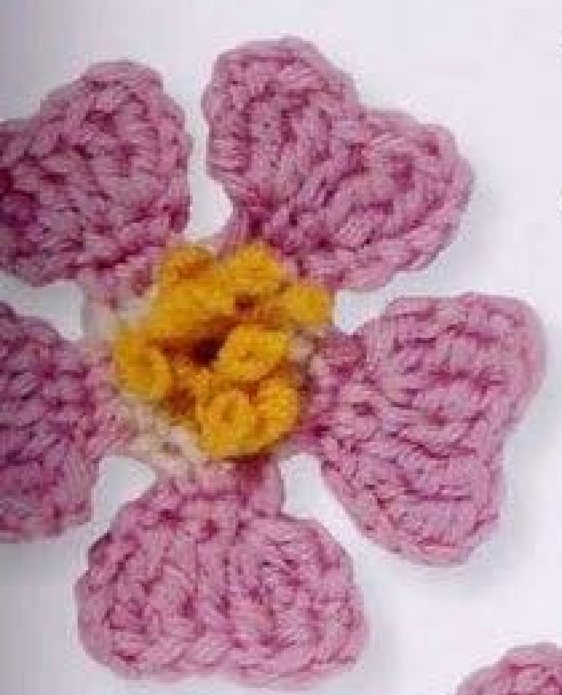
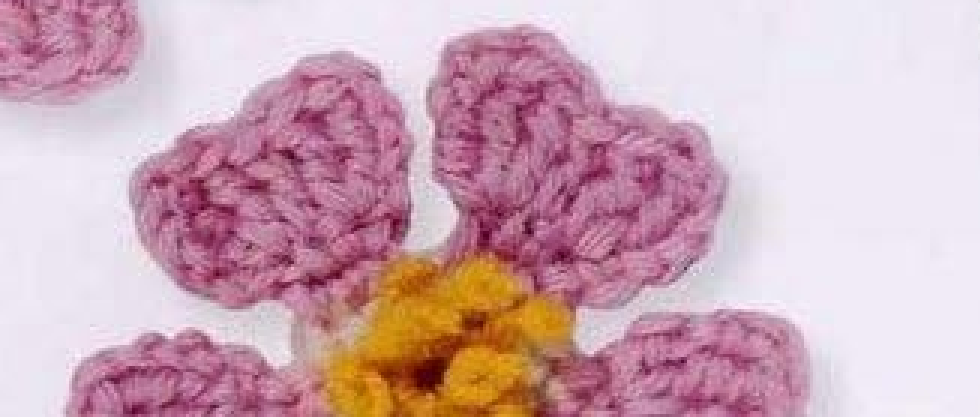

This crochet Wild Rose has five individually worked pink petals around a small yellow-and-white center. The petals broaden through three short rows, then yellow yarn lengths are sewn through the center and finished as stamens. This guide follows pattern 64 in Lesley Stanfield’s 100 Flowers to Knit & Crochet, with its complete construction translated into US terms and illustrated using the original finished-work photos and chart.

Key Takeaways
- Use DK wool in yellow A, white B, and pink C.
- The center has 10 counted positions in its first round and 15 in its second.
- Make five petals separately, fastening off each after its third row.
- US treble and double treble create the tall outer shaping.
- Four yellow lengths, each approximately 12 cm or 4¾ inches, form the sewn stamens.
- Hook, gauge, total yarn quantity, and finished dimensions are not specified.
CROCHET WILD ROSE FLOWER PATTERN
Project: One five-petal wool flower with a yellow center, white foundation ring, pink petals, and sewn yellow stamens. The entry belongs to the source’s intermediate designs. US terminology is used below.
| Skill level | Intermediate in the source. Practical focus: separate short petal rows, very tall stitches, and sewn stamen finishing. |
|---|---|
| Base size | One flower with 5 petals. Finished dimensions are not specified. |
| Yarn | DK wool: yellow A, white B, pink C. |
| Quantity, hook, gauge | Not specified. Choose a hook suited to your wool and evaluate the center and first petal. |
| Notions | Scissors and a blunt wool needle. Four A lengths, each approximately 12 cm, 4¾ inches, are specified for stamens. |
| US abbreviations | ch = chain; sc = single crochet; dc = double crochet; tr = treble crochet; dtr = double treble crochet; sl st = slip stitch; RS = right side; WS = wrong side. UK dc = US sc; UK tr = US dc; UK dtr = US tr; UK trtr = US dtr. |
| Center round 1, RS | With A, make an adjustable ring. Ch 2, 9 sc in the ring; pull the end to close. With B, sl st in the top chain of the starting ch 2. 10 counted positions. Continue B. |
| Center round 2 | Ch 1, [2 sc in the next sc, sc in the next sc] 4 times, 2 sc in the next sc. With C, sl st in the starting ch 1. 15 counted positions. Fasten off; continue with C for the petal. |
| First petal row 1, RS | Ch 1, sc in each of the next 2 sc. 3 counted positions. |
| Petal row 2 | Ch 1, sc in the next sc, sc in the preceding row’s ch 1. Work back across the short row. |
| Petal row 3 | Ch 4, (dtr, tr) in the sc below, dc in the next sc, (tr, dtr, tr) in the preceding row’s ch 1. 7 counted positions. Fasten off invisibly. |
| Remaining petals | With RS facing, join C in the next sc of center round 2 and work as for the first petal. Make 3 more petals the same way: 5 petals total. |
| Stamens | Cut 4 A lengths, each approximately 12 cm, 4¾ inches. Thread one on a wool needle, leaving an end long enough to knot. Pass through the center-ring edge, make a backstitch on WS, and bring the yarn to the front. Repeat with the other 3 lengths, then knot and trim. |
Understand the Five-Petal Construction
Wild Rose is not rolled from a strip. Its small center is worked first, and each petal is built directly on a section of the outer center round. A petal ends with its own invisible finish before the next pink join is made. This leaves five distinct broad petals instead of a continuous ruffle or stacked tiers.
The fifteen-position second center round supports five three-position petal starts. The first petal begins from the pink joining position and works two more singles, while later petals start with a fresh pink join at the next available center single. Count both the petals and their occupied bases as you advance around the ring.
The chart draws several petals in stitch symbols and outlines the others. That convention saves repeating the same symbols five times; it does not suggest leaving some petals unworked. The photographs show completed flowers with all five petals and yellow stamen finishing.
Gather Wool and Plan Your Sample
Choose DK wool in yellow A, white B, and pink C. Yellow is used in the center and again as sewn strands after the crochet is complete. White creates the second center round, providing a pale foundation below the pink petals. Keep the labels attached to your yarn while working the changes.
The pattern supplies no hook size, numerical gauge, overall quantity, or finished measurements. Choose a hook suited to your particular DK wool and examine the center plus one petal. The small single-crochet ring should hold its shape while the tall pink stitches remain flexible enough to spread into a petal.
A sample is more useful than assuming that every DK wool produces the same size. Fiber, twist, hook choice, and individual tension all affect a motif. If you need it to fit a measured applique area, make and finish one complete flower before choosing placement or planning additional copies.
Keep scissors and a blunt wool needle ready. The four yellow stamen lengths have a specified starting length of approximately twelve centimeters, four and three-quarter inches. This measurement belongs to the cut strands; it is not a finished flower diameter, petal length, or stem measurement.
Translate the Taller Stitches Correctly
The book uses UK terminology. Its double crochet becomes US single, treble becomes US double, double treble becomes US treble, and triple treble becomes US double treble. These conversions matter most in the last petal row, where different heights shape the outer edge.
For a US treble, yarn over twice before entering the stated base, draw up a loop, then yarn over and draw through two loops three times. For a US double treble, yarn over three times before insertion, then complete four successive draw-through-two steps. Each tall stitch is completed independently.
These are ordinary tall stitches, not clusters. Do not retain the final loop of one stitch for a shared closure with the next. The tallest positions widen the shoulders of each petal, while the shorter central double helps create the gently indented edge visible in the finished photo.
Terminology checkpoint: UK trtr is US double treble, and UK dtr is US treble. Converting both to US double would flatten the petal and change its intended outline.
Step 1: Work the Yellow Center
With yellow A, make an adjustable ring. Keeping the right side facing, chain two and work nine US singles into the ring. Pull the starting end to close the ring. The source counts the starting rise with the nine actual singles as ten positions for this round.
Introduce white B when making the slip stitch into the top chain of the starting two-chain rise. This is the second chain of the rise, not its first chain and not the first actual single. Continue with B for the next round so that the color change occurs at the join.
Spread the little ring enough to identify its stitch tops before moving on. A tight center opening can be useful, but the stitch positions still need to remain readable. Secure the starting end without pulling the white joining position underneath the ring or making the yellow center twist.
Step 2: Increase to Fifteen White Positions
Chain one with B. Work two singles in the next single and one single in the following single, repeating that pair four times. Work two singles in the next single after those four pairs. This uses nine actual yellow singles and produces fourteen actual white singles plus the starting chain position.
The source’s total is fifteen counted positions. Do not add a further single into the yellow two-chain rise to compensate for a missing count; the white starting chain is already included. Lay out the round and count it before beginning any pink petal rows.
With pink C, slip stitch into the starting white chain one. The entry then says to fasten off and continue with C. Preserve the pink petal starting point at this join. The following petal directions use short rows rather than another continuous round of pink stitches.
Center checkpoint: Four repeated increase-and-single pairs plus one final increase give fourteen actual white singles. The starting chain position brings the stated total to fifteen.

Step 3: Establish the First Petal
With the right side facing, chain one and work one single in each of the next two center singles. The source counts three positions for this first petal row: the starting chain and those two actual singles. Keep the next unused center position identifiable for the following petal.
The next instructions form a short row back across this little section. The source does not print the word turn at each line, but row 2 explicitly returns to the preceding row’s starting chain. Reorient the work as needed to follow those placements, rather than continuing around the center ring.
Do not make a wider base by adding another actual single after the two stated stitches. The three counted positions are sufficient for the following shaping. A wider start would occupy an extra center position and make it difficult to fit five evenly based petals around the fifteen-position ring.
Step 4: Work the Short Second Row
Chain one. Work a single into the next single, then a single into the first row’s chain one. Follow that row-end chain deliberately; it is not a new center stitch. This returns across the short petal section and prepares the three positions used by the final shaping row.
Look at the chain rise as a real row-end placement even though it can be smaller than the actual singles beside it. If your chains are very tight, loosen the first one slightly on the next petal instead of substituting a center stitch that is easier to enter.
Keep the working edge free of the white ring while handling the short row. The pink singles make the petal’s narrow base. Catching an additional white center strand during this row would tie the petal back down unnecessarily and interfere with the tall edge in the next row.
Step 5: Shape the Tall Outer Edge
Chain four. In the single directly below that rise, work one US double treble and one US treble. Work one US double in the next single. In the preceding row’s chain one, work one US treble, one US double treble, and one US treble, all in that same chain placement.
The source counts seven positions: the four-chain rise, two tall stitches in its base, the central double, and three tall stitches in the row-end chain. The groups share bases only where parentheses indicate them. Do not spread each stitch of the final three-stitch group into a different center position.
The central double is shorter than the tall groups beside it. This graduated arrangement creates the broad petal with a softly indented top. Let the completed tall stitches spread naturally instead of pulling their tops tightly together as though finishing a cluster.
Fasten off invisibly after the row. Follow the finishing path at the petal edge and secure the end on the back. Keep the new finish small enough that it does not become an extra prominent bump among the tall pink stitches. Leave the unused center positions available for the next join.
One Center Supports Five Separate Petal Starts
The center’s fifteen counted positions are divided among five short three-position petal starts. Each petal is worked to completion and fastened off before the next begins. The chart’s symbol-filled petals illustrate that construction, and its outlines show the remaining repeated shapes.
Step 6: Repeat for All Five Petals
With the right side facing, join C in the next single of center round 2 and work the second petal exactly as the first. Chain one, work the next two singles, return across the short second row, then make the graduated tall third row and fasten off invisibly.
Make three more petals using the same sequence after the second. Including the first and second, the finished total is five. Keep the next join at the next unused center position rather than joining into an already completed pink petal or an arbitrary gap beside it.
Compare completed petals before beginning the stamens. Each should have the same narrow base and seven-position tall edge. If one looks noticeably shorter, check the double-treble yarn-over count and the central double placement before assuming it only needs to be pulled into shape.
Arrange all five around the center without sewing their outer edges together. They are distinct petals in the source design. Small differences caused by relaxed wool or handling can be adjusted gently, but a missing tall stitch or skipped row-end chain needs a stitch correction rather than forceful stretching.

Step 7: Sew the Yellow Stamens
Cut four lengths of A, each approximately twelve centimeters or four and three-quarter inches. Thread one on a wool needle and leave an end long enough to knot. Take it through the edge of the center ring, make a backstitch on the wrong side, and bring it back to the front.
Repeat that process with the remaining three yellow lengths. The backstitch anchors each strand at the center without adding another crochet round. Work through the center-ring edge as stated instead of passing long yellow stitches over the pink petal surfaces.
Knot and trim the strands after all four have been placed. The entry does not supply a finished numerical stamen height or require a particular number of decorative knots on each length. Follow the sewn construction and use the finished source photograph to guide the overall compact yellow appearance.
Stamen checkpoint: The source specifies four cut lengths and their approximate starting length. It does not prescribe a separate crochet stamen, a fifth yellow round, or a numerical final strand height.
Troubleshoot the Center and Petals
The last petal has no available base
Recount the second center round and the three-position starts. Check for an extra actual single in a petal’s first row or a new join made beyond the next unused center stitch. Five petals should fit the fifteen-position center without inventing additional foundation stitches.
A petal looks narrow or pointed
Check the same-base tall groups and the row-end chain. The final group contains treble, double treble, and treble together. If those were spread across separate center positions, or if the double treble was shortened, the resulting shape will differ from the original broad edge.
The yellow strands slip loose
Check that each has the specified wrong-side backstitch and a secure knot before trimming. Pulling harder on an unsecured strand can distort the center rather than fixing its attachment. Retain workable ends until you have inspected the front and back of the finished stamens.

Optional Colors and Decorative Use
Other wool colors can be optional substitutions while retaining the same three color roles and all original stitch placements. Such changes are personal variations, not additional source colorways. A thicker yarn or larger hook may change size, so finish a full sample before making several flowers for a measured project.
Suggested uses include a sewn floral accent on a bag, fabric panel, or handmade accessory. These are added placement ideas, not complete projects supplied with Wild Rose. Attach through stable back or center stitches so that the separate pink petals and yellow sewn stamens remain visible.
No stem, leaf, sepal, or flower backing is included in this entry. The neighboring butterfly in the directory is a separate pattern. If you combine motifs, keep their recipes separate and position the finished pieces before sewing, rather than treating neighboring photographs as extra Wild Rose components.
Wild Rose at a Glance
- DK wool in yellow, white, and pink.
- Center totals of 10 and 15 counted positions.
- Five separate three-row petals.
- US double, treble, and double treble shape the outer edges.
- Four sewn yellow lengths finish the stamens.
Conclusion
Wild Rose depends on clear center counts, five separate petal starts, and the correct tall-stitch translation. Finish each pink petal before joining the next, then sew the four yellow lengths through the center-ring edge. The compact card contains the complete recipe, while the original chart and finished examples show its structure. Click the Pin to see the pattern again when you are ready to make your flower.
Source and Tags
Source: Lesley Stanfield, 100 Flowers to Knit & Crochet, pattern 64 Wild Rose. Instructions and chart are on printed page 81, PDF page 75; the directory flower is on printed page 24, PDF page 19. Instruction-page flowers are partly cut off by the scanned edges. All source photographs show completed work. US translation and additional practical guidance accompany the original stitch sequence.
Crochet Wild RoseFive-Petal FlowerDK WoolTall Crochet StitchesSewn StamensUS Crochet Terms